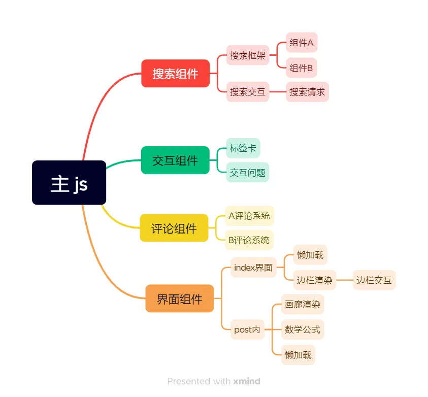
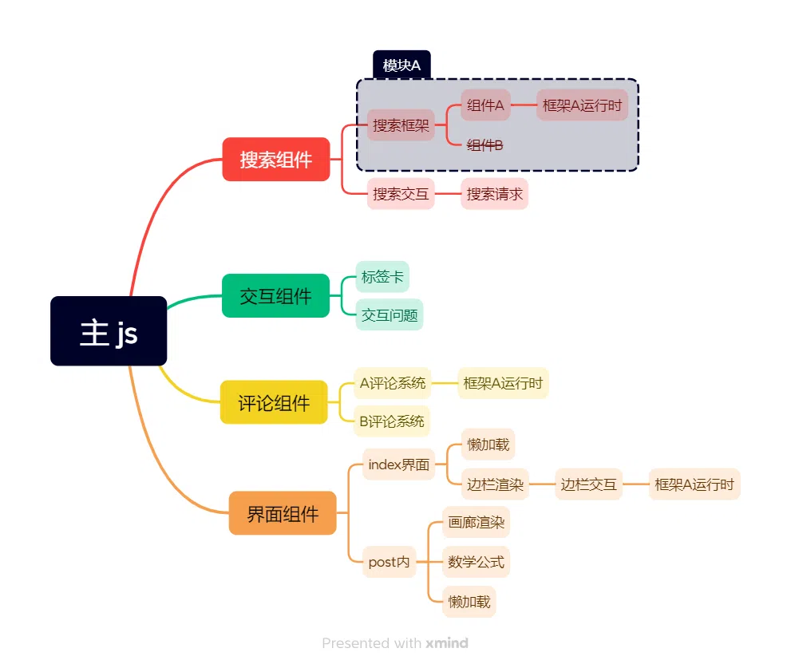
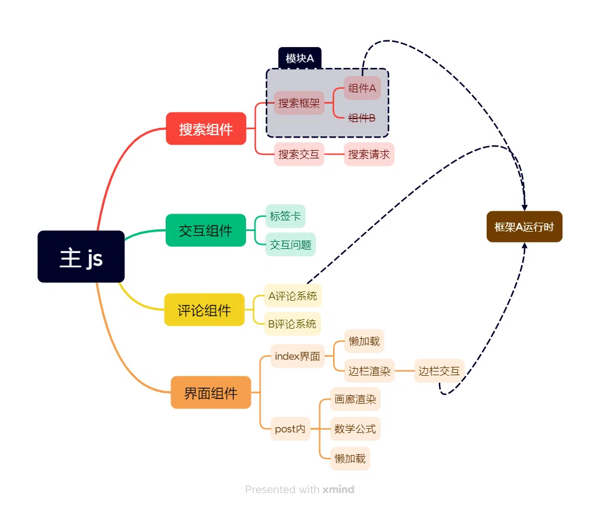

# 论 ESM 和 esbuild 在 hexo 主题中的应用
# 引言
本文为 ShokaX 0.4 中采用的新技术，使用 ESM + esbuild 实现 js 打包 tree-shaking
和 js 模块化
我们在 ShokaX 0.3.15 和 ShokaX 0.4alpha4 上分别进行测试，得到如下结论：
| 测试版本 | 采用技术 | 落地页 js 体积 | 完整 js 体积 |
|---|---|---|---|
| 0.3.15 | CJS(UMD) + esbuild | 561.2KB | 561.2KB |
| 0.4alpha4 | ESM + esbuild | 43.2KB | 283 KB |
注：上述 js 体积为主题生成 js + 所有第三方在主 js 执行前的 js 体积之和
我们在采用 ESM + esbuild 后总 js 体积达优化前的 50%，在落地页 js 体积可达优化前的 7%，并且用户侧实际执行的 js 远小于此
但是为什么这两个技术能有如此大的作用呢
# 为什么是 ESM
这个问题的答案随便一搜都能搜出来：ESM 模块具有静态结构，ESM 具有更好的 tree-shaking 能力
所以 ESM 为什么相较于 UMD 有如此大的进步也很显然，很多人都用 “摇动死去的叶子” 作为例子（实际上 tree-shaking 确实是这个意思）
但我更喜欢用 “树” 本身来描述这件事：

这是一个类 hexo 主题的功能分解，本例中 ESM 的好处：
# tree-shaking
例如搜索模块，包含组件 A、B，假如我们只需要组件 A，此时直接使用 UMD 模块就会浪费组件 B 的带宽，这是因为两点：
- 大部分 UMD 模块是预构建的，通过公共 CDN 进行分发，这意味着为了保证功能完整，只能打包最大功能集的 UMD 文件（部分库会提供不同配置的 UMD，但治标不治本）
- UMD 是动态的，且相当部分的 UMD 模块采用对外暴露变量的方法，这高度不利于 tree-shaking
但是假如我们使用 ESM 版本的搜索模块：

现在组件 B 被划去了，在最终 js 中不包含组件 B，假如组件 B 有其他依赖：

那么此时组件 B 及其依赖都会被切断，这也是为什么我更喜欢用 “树” 表示这一过程的原因，“叶子” 给人一种暗示就是 “此组件即为依赖链末端”，忽略了 ESM tree-shaking 时能切断依赖链的这一特性
此步骤通常可以减少 5-10% 的 js 体积，取决于原先 UMD 模块的大小
# 代码重用
还是这棵树，但是做了些许改动：

我们可以看到里面有三个框架 A 的运行时，假如这是一个相对较大的框架，重复加载 3 个运行时绝非一件易事
因为 UMD 本身的特性，这些运行时如果不刻意提取是无法共用的，而绝大多数 UMD 为了保证开箱即用都会把框架运行时打包
但是假如是 ESM：

在打包时，打包器会发现多个模块引用了同一个框架（因为 ESM 的静态特性），此时打包器就会仅打包一次框架 A，而不是像 UMD 一样分别捆绑（前提是依赖不冲突）
注：上图中的懒加载先留着，后面有用
此类情况并不常见（但假如你在一个基于 Vue 的主题中使用 waline 就会遇到）一旦遇到，此类优化通常能减少 15-35% 的 js 体积
# 功能开关
上图中的功能，如果用户不想使用，则需要关闭
此时 UMD 和 ESM 的区别不太明显，因为 UMD 可以通过关闭模板的 script 标签实现不引入
因而不做详细讲解，后文 esbuild 部分会有实现说明
# 懒执行
这个技术和懒加载很类似，有些功能非常重，但是不太重要（例如搜索和评论系统）
为了减少 js 运行时间和网络负载，可以采用懒执行技术。
主要实现方法为动态导入（即 import() ）配合 esbuild esm 格式的代码拆分功能，通过 IntersectionObserver 或者点击事件等方法在使用时再导入 js
其实 UMD 也可通过动态加载 script 标签实现类似效果，但是可控性和性能都相对更差
此方法可有效优化落地页 js 体积和执行时间
# 具体实现
# 模块化
首先，主题的 js 需要实现基于 ESM 的模块化（Typescript 更好）
这部分不做详细解释，建议自行寻找 ESM 教程
# 引入 esbuild
第一步，把主题 js 放在一个以 _ 开头的文件夹中，因为未经打包的 js/ts 是不应被生成的，需要忽略
然后，在你的主题 scripts 生成器中添加一个生成器，使用 esbuild 编译相关 js，例如：
import { buildSync } from 'esbuild' | |
buildSync({ | |
entryPoints: ['_app/entry.ts'], | |
bundle: true, | |
outdir: 'themeTemp', | |
tsconfigRaw: { | |
compilerOptions: { | |
target: 'ES2022', | |
esModuleInterop: true, | |
module: 'ESNext', | |
moduleResolution: 'Node', | |
skipLibCheck: true | |
} | |
}, | |
platform: 'browser', | |
format: 'esm', | |
target: ['es2022'], | |
minify: true, | |
legalComments: 'linked', | |
mainFields: ['module', 'browser', 'main'], | |
splitting: true | |
}) |
参数的详细解释如下：
- entryPoints: 主题 js 入口点，以 hexo 根目录（即 hexo-site pkg 所在）为基准
- bundle: 显式捆绑所有依赖项，为了在浏览器端运行，必须这么配置
- outdir: 输出目录，目录以 hexo 根目录为基准。在使用完成后请注意删除此文件夹以节省用户磁盘空间
- tsconfigRaw: 如果主题使用 ts，此选项为 tsconfig.json 内容
- platform: 编译目标平台，一般使用
browser - format: 必须为 esm，否则代码拆分不可用
- target: 编译目标，建议查看 esbuild 文档 以获取详细信息
- minify: 压缩生成 js，建议启用
- legalComments: 版权声明储存位置
- mainFields: 默认使用 package.json 中的哪个入口点，建议和示例一致而非保持默认，因为：
- 大部分包的 browser 入口点为 UMD 包而非 ESM 包，这不利于 tree-shaking
- 通常 main 为 CJS，和 browser 在打包方面表现类似，但 browser 可能兼容性更好（CJS 是 node 格式）
- splitting: 显式启用代码拆分，如果需要懒执行特性必须开启
然后，出于兼容性目的渲染 js 并传入生成器即可
# 在模板中引入和预加载
引入只需要注意 script 需要带 type=module ，建议配合 defer 或者 async
预加载指在 html head 解析时就提前要求浏览器下载 ESM 模块，这可以解决依赖链所带来的加载缓慢问题，例如一条依赖链：
app.js | |
|- chunk-AAAA.js | |
|- search-AAAA.js | |
|- chunk-BBBB.js |
此时，如果不采用预加载，search 需要 app.js 和 chunk-AAAA.js 解析完毕后才会开始引入，假如 search 此时需要被调用时会有明显延迟
预加载需要在模板头部加入带有 modulepreload 的 link ，这会让浏览器提前下载并解析模块，这是一个示例 helper ：
hexo.extend.helper.register('preloadjs', function () { | |
const { statics, js } = hexo.theme.config | |
let res = '' | |
fs.readdirSync('./themeTemp').forEach((file) => { | |
if (file.endsWith('.js')) { | |
res += htmlTag('link', { rel: 'modulepreload', href: url_for.call(this, `${statics}${js}/${file}`) }, '') | |
} | |
}) | |
return res | |
}) |
此时调用就会生成一段模块预加载 html，注意放在 head 内
# 定义静态常量
esbuild 的选项中 define 一下即可，例如：
define: { | |
__shokax_search__: config?.algolia ? 'true' : 'false' | |
} |
此时在代码中使用：
if (__shokax_search) { | |
// ... | |
} |
即可在编译时 tree-shaking 掉无用代码
务必注意 esbuild 时哪些变量可访问，否则可能错误 / 无效 tree-shaking
# 懒执行
使用动态 import 导入非必要代码，例如：
if (__shokax_waline__) { | |
import('../components/comments').then(({ walinePageview, walineComment }) => { | |
walinePageview() | |
walineComment() | |
}) | |
} |
此时这段代码只是被异步执行了，不会懒执行，我们可以添加一个 IntersectionObserver ，当评论正上方的 #copyright 可见时开始加载评论：
const comment = new IntersectionObserver((entries) => { | |
entries.forEach((entry) => { | |
if (entry.isIntersecting) { | |
if (__shokax_waline__) { | |
import('../components/comments').then(({ walinePageview, walineComment }) => { | |
walinePageview() | |
walineComment() | |
}) | |
} | |
comment.disconnect() | |
} | |
}) | |
}, { | |
root: null, | |
threshold: 0.2 | |
}) | |
comment.observe($dom('#copyright')) |
此时 comment 就已经被懒运行了
# 结语
本文事实上是 hexo 对于 ESM + esbuild 的补丁，现代的内容中心生成器早已实现（Astro、Vitepress、Valaxy 等）
如果您已经看到了这里，相信您对于前端现代化技术相当重视，那么让我们来看一下 hexo 主题的普遍现状：
- 前端自动化？Gulp 压缩静态文件都可以叫自动化，CI 工作流闻所未闻
- 代码模块化？script 标签分别引入都可以叫模块化，ESM 和 esbuild 闻所未闻（注：本文可能是第一个在 hexo 框架下涉及此方面的）
- css 模块化？按需引入根本没有，整体思想仍然停留在数年前的一个 css 解决所有问题
- 现代 UI 架构？没有 ESM 的情况下使用 UMD 引入各个 UI 架构绝非一件易事（指开发体验）
- 热重载、SPA、SSR？这些连补丁都打不了
所以说在 2024 年开发一个 100% 的 hexo 主题真的是一个好选择吗？我认为不是
如果您准备开发一个新主题，我更建议您使用 Astro、Valaxy 等现代 Blog 框架，
或者将 hexo 作为 CMS，使用 Next.js、Nuxt.js 等框架渲染实际内容。开发一个 100 % 的 hexo 主题所带来的缺点愈发明显，不限于上面的 5 点，
今天有人为 hexo 打 ESM 的补丁，出现下一个问题还会有下一个吗？或者说，补丁还打的过来吗？
如果您对本文章有任何疑问，欢迎给我发邮件或者去 ShokaX 的讨论区询问。